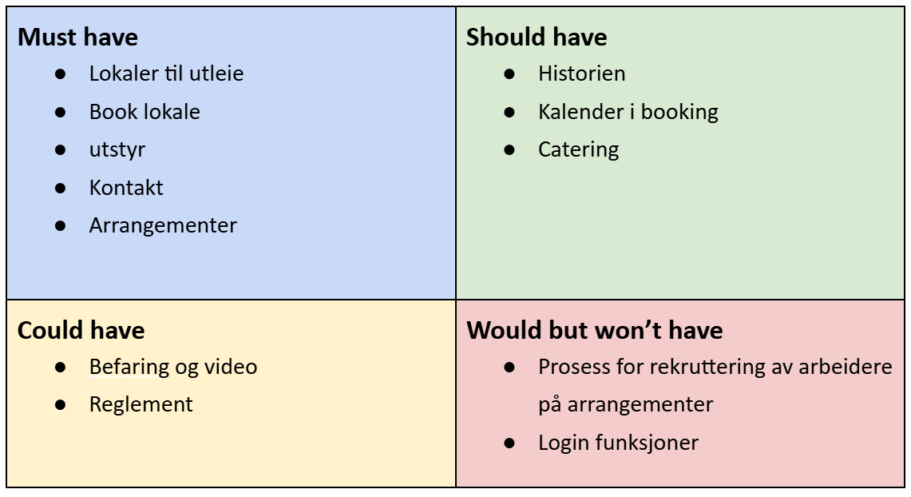
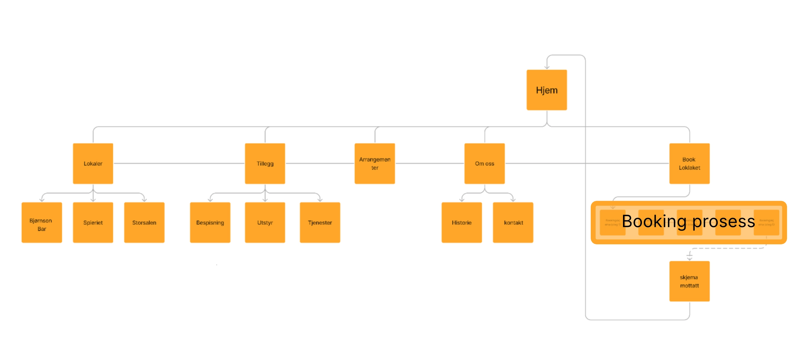
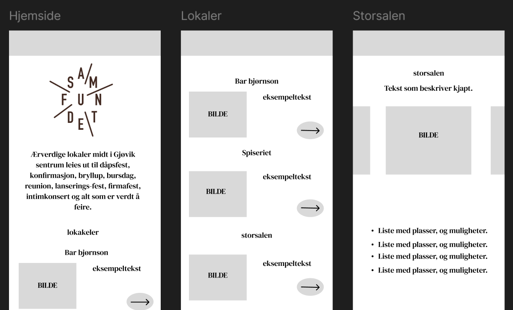
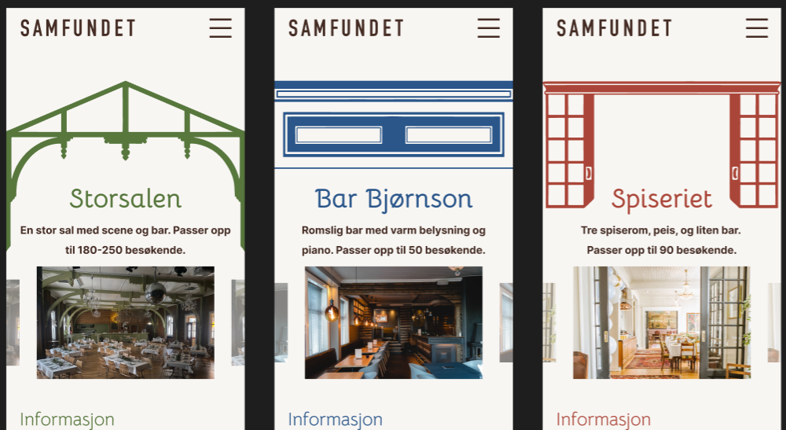
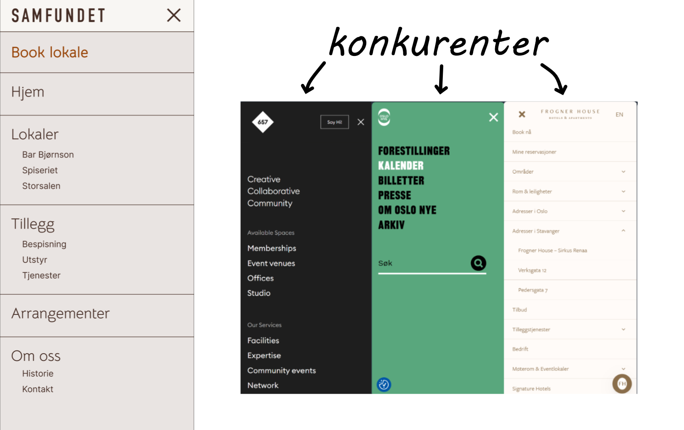
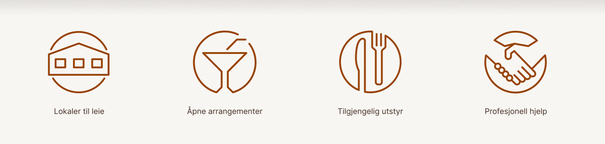

Samfundet Gjøvik

2024 | Emne: Design og prototyping for digitale produkter | Gruppe prosjekt | Rolle: informasjonsarkitekt
Samfundet Gjøvik er et selskapsåmrådet i Gjøvik som er kjent for sin lange historie og sjarmerende utsene. De ønsket seg en oppdatert side for å bedre vise sin karakter og tilby en bedre bookingopplevelse.
Jeg jobbet sammen med en annen interaksjonsdesigner og to grafiske designere. Gjennom prosjektet hvor jeg var med å fokusere på informasjonsarkitektur og brukeropplevelse.
Insiktsfasen
I starten av prosjektet var vi med på befaring i Samfundet Gjøvik for å forstå hva de tilbyr sine brukere og se på innhold som kan være nyttig til nettsiden. Videre gjorde vi en UX-evaluering og utførte flere brukertester hvor vi fant flere punkt der brukere ble forvirret. Og lagde grunnlagg for videre konseptuering. I tillegg lagde vi en MoSCoW-analyse og så på konvensjoner og konkurenter som og ble med på videre arbeid.

Hovedinnsikt:
- Nettsiden er lite responsiv
- Dårlig kontrast på flere områder
- Forvirrende navigasjon
- Dårlig bookingskjema
Konseptuering
Vi startet med å se på informasjonsarkitektur for å finne ut hvordan vi ville sette opp alt innholdet vi trengte ved å lage en sitemap. Vi gikk så videre på å utvikle en lofi prototype av nettsiden.


Utvikling
Videre utviklet vi et designsystem sammen med grafisk design studentene. Her tok vi blant annet valg på skrifttyper og farger, og vi bestemte oss for å gi hver av lokalene i Samfundet sin egen farge.

Vi redesignet også hamburgermenyen ut fra konkurentene vi hadde sett på, for å formidle informasjon tydelig og gi det en stil som bedre passer Samfundet.

Det var og mye annet som ble laget som egne ikoner for nettsiden.

Du kan prøve hele prototypen i figma med knappen under:
Til Figma prototypeRefleksjon
Det er mye jeg har lært og blitt bedre på gjennom prosjektet. Spesielt har jeg blitt bedre på å se viktigheten av god informasjonsarkitektur og UX for at brukere skal få en god opplevelse av å bruke tjenester og produkter. Jeg har også lært mer om hvordan god samarbeidspartner og ønsker å utvikle meg mer på denne siden for å kunne være til større hjelp i prosjekter.
I alt er jeg fornøyd med prosjektet og glad for å være i gruppe med de jeg var i, og ser både mye jeg kan kopiere og unngå for prosjekter i fremtiden.
Tilbake til alle prosjekter